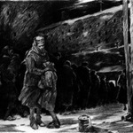

Заключенный: Лев Копелев
Они вызвали меня на партийное совещание. Голосовали против меня. Меня исключили из партии за «грубые политические ошибки, за сочувствие к немцам, за буржуазный гуманизм, и за опасные предложения по вопросам текущей политики.» У меня забрали партийный членский билет.

An Enemy of the People
Те, кто остались на свободе
Родители, супруги, и дети заключенных натолкнулись на серьезные жизненные препятствия после отбытия своих близких. Анна Ахматова в своем стихотворении «Реквием» выразила боль тех, кто надеялся получить малейшие новости о судьбе своих близких по ту сторону тюремной стены.
В страшные годы
ежовщины я провела семнадцать месяцев в
тюремных очередях в Ленинграде…
И я молюсь не о себе одной,
А обо всех, кто там стоял со мною,
И в лютый холод, и в июльский зной
Под красною ослепшею стеною…
А если когда-нибудь в этой стране
Воздвигнуть задумают памятник мне,
Согласье на это даю торжество,
Но только с условьем – не ставить его
Ни около моря, где я родилась:
Последняя с морем разорвана связь…
А здесь, где стояла я триста часов
И где для меня не открыли засов…
И пусть с неподвижных и бронзовых век
Как слезы, струится подтаявший снег…
Анна Ахматова. Сочинения в двух томах. Москва, “Цитадель”, 1996.